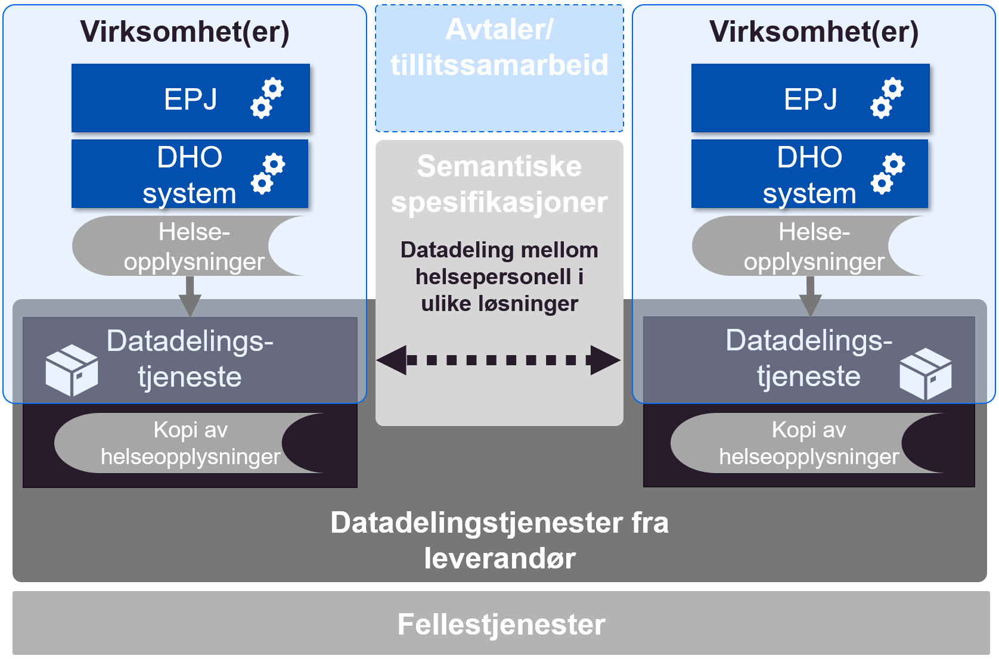
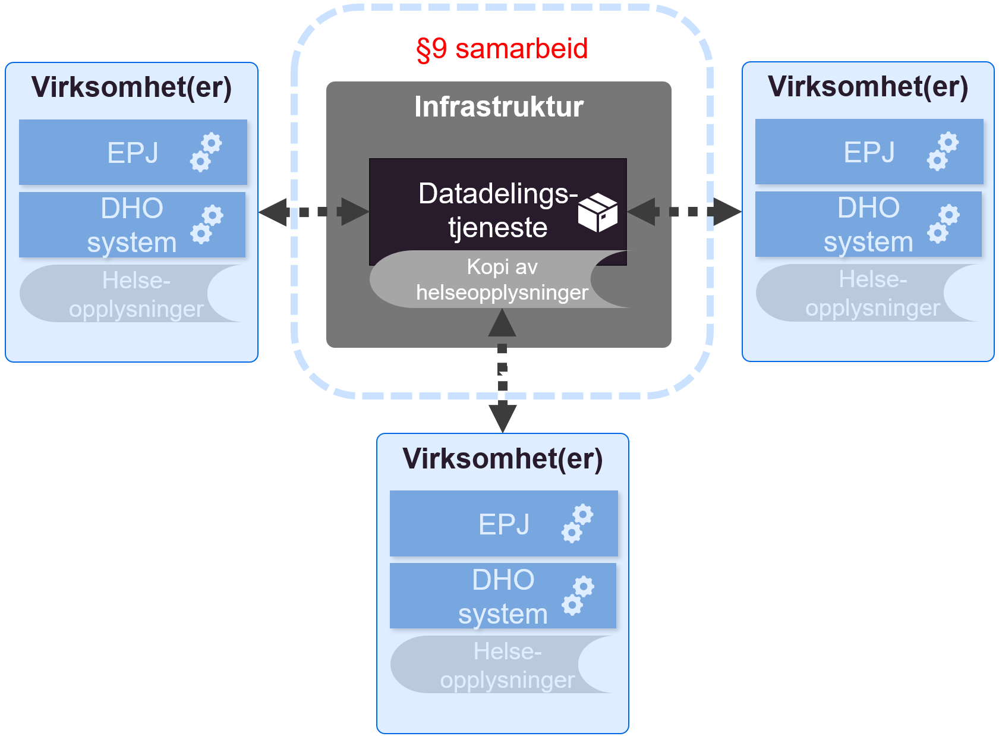

Juridiske vurderinger
| Status | Version | Maturity | Normative level |
|---|---|---|---|
| Prerelease | v0.8 | review | ikke normert |
Innledning
Digital hjemmeoppfølging er underlagt det samme rettslige rammeverket som øvrig helsehjelp. Krav til behandling av helse- og personopplysninger som stilles i helselovgivningen og personvernregelverket må følges når en benytter digital hjemmeoppfølging som en integrert del av et behandlingsforløp. Ved bruk av digital hjemmeoppfølging må det dermed gjøres konkrete vurderinger i de enkelte tilfellene slik at det sikres at bestemmelsene om f.eks. dokumentasjonsplikt, tilgjengeliggjøring av opplysninger, taushetsplikt, ansvarsforhold, behandlingsgrunnlag, informasjonssikkerhet mv. oppfylles på vanlig måte.
Tilgjengeliggjøring av opplysninger via datadeling innebærer behandling av personopplysninger, herunder helseopplysninger. Enhver behandling av personopplysninger skal ha en eller flere dataansvarlige.
Ansvaret for behandlingen av opplysningene ligger til en dataansvarlig. Dataansvarlig er den eller de som bestemmer formålet og midlene med behandlingen av personopplysningene. Virksomheten der helsehjelpen ytes, er som oftest dataansvarlig. Når en dataansvarlig velger å overlate hele/deler av behandlingen av personopplysningene til en annen virksomhet, vil denne være en databehandler, jf. nedenfor.
Den enkelte virksomhet er dataansvarlig for all behandling av opplysninger som skjer i sine respektive registre og systemer. Der tilgjengeliggjøring av opplysninger skjer ved utlevering, vil også mottakervirksomheten bli dataansvarlig for sin behandling av opplysningene. I en arkitektur der strukturerte data som er lagret hos hver enkelt aktør i sektoren kun vises gjennom datadeling, vil primærkilden for opplysningene (den enkelte helsevirksomhet) være dataansvarlig for opplysningene som gjøres tilgjengelig gjennom løsningen.
Dersom virksomheten som er dataansvarlig benytter en databehandler, kan denne gis tilgang/behandle opplysninger i tråd med hva den dataansvarlige bestemmer i databehandleravtale, jf. personvernforordningen artikkel 28. Det kan gis både lese- og skrivetilgang via datadeling. En databehandler behandler opplysninger på vegne av den dataansvarlige og vil ikke ha noe selvstendig formål med behandlingen. Databehandleren er som sådan underlagt den dataansvarliges instruksjonsmyndighet, og vil i denne sammenheng ikke regnes som en ekstern virksomhet. Den dataansvarlige og databehandleren skal i alle tilfeller sørge for tilfredsstillende informasjonssikkerhet, jf. pasientjournalloven § 22 og personvernforordningen artikkel 32.
For å behandle personopplysninger må den dataansvarlige videre ha et behandlingsgrunnlag. Det rettslige grunnlaget for registrering av opplysninger vil her være dokumentasjonsplikten, jf. helsepersonelloven §§ 39 og 40, jf. pasientjournalloven § 8, eventuelt § 9. For å tilgjengeliggjøre pasientopplysninger for andre enn de som har nedtegnet disse, må det foreligge et unntak fra helsepersonells taushetsplikt, jf. pasientjournalloven § 19.
Datadeling og DHO
Slik digital hjemmeoppfølging benyttes internt i en virksomhet i dag er det ikke nødvendig med regelverksutvikling. Det er først og fremst når virksomhetene har behov for å utveksle helseopplysninger på tvers av behandlingsnivåer (mellom primær- og spesialisthelsetjenesten), at det juridiske handlingsrommet blir utfordret.
 Behov for datadeling knyttet til DHO tjenesteforløp
Behov for datadeling knyttet til DHO tjenesteforløp
Oppsummering
De innsamlede data ligger i ulike DHO-systemer og i lokal journalløsning. Det kan i utprøvingen og videre bli aktuelt å delvis lagre data fra digital hjemmeoppfølging hos dataansvarlig som en datadelingstjeneste eller sammenstilt på tvers av aktører. Det er foreløpig uavklart om en separat lagringsløsning for å understøtte en datadelingstjeneste hos dataansvarlig er innenfor dagens regelverk.
Nasjonal lagring av sammenstilte data (hvor en nasjonal aktør har dataansvar) vil etter vår vurdering kreve et annet juridisk grunnlag enn det som finnes i dag, og forutsetter derfor regelverksutvikling/forskriftsendring.
Problemstillinger som er vurdert
Ettersom datadeling mellom virksomheter er lite brukt i helse- og omsorgssektoren, er også det juridiske handlingsrommet i noen grad uavklart for denne typen samhandling og samhandlingstjenestene som skal understøtte dette. I mars 2021 publiserte Direktoratet for e-helse en målarkitektur for datadeling i helse- og omsorgssektoren. Målarkitekturen for datadeling omhandler i hovedsak hvordan datadelingstjenester kan etableres med tilstrekkelig grad av sikkerhet og personvern som er pålagt de dataansvarlige. Vi har derfor ikke sett det som nødvendig å vurdere dette igjen i forbindelse med DHO. Målarkitekturen for datadeling beskriver hvordan dataansvaret er fordelt mellom virksomheter som benytter datadeling for samhandling. Ved overføring av informasjon ved hjelp av datadeling fungerer dataansvaret som ved andre samhandlingsformer, det vil si at mottakeren har dataansvar for sin behandling av mottatt informasjon.
Målarkitekturen for datadeling forutsetter at det opprettes en fellesløsning for å lokalisere data om en pasient kalt Pasientinformasjonslokalisator (PIL) for at datadeling mellom mange datadelingsløsninger skal fungere. Det er i dag ikke rettslig grunnlag for å etablere en fellesløsning med sentral sammenstilling av informasjon, dette krever forskriftsendring. Det er usikkert hvordan PIL kan/skal etableres. Pasientjournalloven § 10 åpner for å gi forskrift om sentraliserte infrastrukturkomponenter for å støtte samhandlingen. Bestemmelsen i seg selv er ikke tilstrekkelig. Regional PIL-komponenent kan etableres innenfor gjeldende rett.
Vi har særlig vurdert følgende spørsmål som påvirker hvilke konsepter og løsningsvalg som kan vurderes:
- Hvilke rammer setter regelverket for å etablere datadelingsløsninger sentralisert (i sentral infrastruktur), regionalt eller distribuert (i virksomhetenes egen infrastruktur)?
- Hvilket handlingsrom har dataansvarlig i forhold til å etablere teknisk infrastruktur for datadeling.
- Avklarer hvorvidt datadelingsløsninger kan etableres for en dataansvarlig av en tredjepart, der behandling av helseopplysninger er regulert av en databehandleravtale, eller om virksomheten er bundet til å håndtere alle funksjoner knyttet til datadeling innenfor egen infrastruktur og med en teknisk komponent for å lagre helseopplysningene.
Beskrivelse av konseptene
Konseptene som blir vurdert juridisk i dette kapittelet er nærmere beskrevet i konsepter for realisering. I den delen er også vurderingen av fordeler og ulemper med hvert konsept gjennomgått.
Distribuerte datadelingsløsninger (i virksomhetenes infrastruktur)
Distribuerte datadelingsløsninger i virksomhetenes infrastruktur baserer seg på at hver enkelt virksomhet etablerer sin egen løsning for å avgi informasjon fra sine systemer.
 Distribuerte datadelingsløsninger etablert i virksomhetenes infrastruktur
Distribuerte datadelingsløsninger etablert i virksomhetenes infrastruktur
Juridisk
Virksomhetene kan selv etablere datadelingsløsninger for tilgjengeliggjøring av pasientinformasjon fra egne interne systemer til helsepersonell i andre virksomheter som har tjenstlig behov for informasjonen. Forutsetningen er at dette kan skje innenfor rammen av pasientjournalloven § 19, slik at hensynet til taushetsplikt, personvern og informasjonssikkerhet ivaretas.
Distribuerte datadelingsløsninger (i sentral infrastruktur) (uavklart)
Konseptet baserer seg (som ren distribuert modell) på at hver enkelt virksomhet etablerer sin egen løsning for å avgi informasjon fra sine systemer, men istedenfor å etablere dette i egen infrastruktur etableres selve grensesnittet og datalager for datadeling i en felles infrastruktur.
 Distribuerte datadelingsløsninger etablert i sentral infrastruktur
Juridisk
Virksomhetene kan velge å benytte en tredjepart (databehandler) som tilbyr datadelingsløsning i stedet for å etablere dette selv. Forutsetningen er som over at dette kan skje innenfor rammen av pasientjournalloven § 19, slik at hensynet til taushetsplikt, personvern og informasjonssikkerhet ivaretas.
Videre er det er en juridisk forutsetning at informasjonen fra hver virksomhet ikke sammenstilles med informasjon fra andre virksomheter i den sentrale infrastrukturen (hos databehandler), men at løsningene for lagring og grensesnittene etableres som logisk adskilte løsninger for hver virksomhet. Behandlingen av helseopplysninger i sentral infrastruktur må reguleres av en databehandleravtale mellom den enkelte virksomheten og leverandøren av infrastrukturen.
Regionale fellesløsninger
Ved etablering av regionale fellesløsninger, for eksempel for DHO, blir informasjonen som skal deles med andre virksomheter lagret i den regionale fellesløsningen. Grensesnitt for å avgi informasjon ved hjelp av datadeling etableres også som en del av den regionale fellesløsningen.
 Datadeling etableres som en del av en regional fellesløsning
Datadeling etableres som en del av en regional fellesløsning
Juridisk
Et § 9-samarbeid kan benyttes for å etablere et felles behandlingsrettet helseregister for virksomhetene i samarbeidet. Registeret må komme til erstatning for de lokale §8-registrene. Intern tilgang/tilgjengeliggjøring etter pasientjournalloven § 19 må vurderes på vanlig måte. Her innebærer det ordinær tilgangsstyring til «egen» journal, ikke datadeling på tvers av nivåer/aktører.
For deling av opplysninger med aktører som ikke er med i §9-samarbeidet, blir vurderingen som for distribuerte datadelingsløsninger over.
Regionale datadelingsløsninger med lagring
Ved etablering av sentral regional datadelingsløsning blir informasjonen som skal tilgjengeliggjøres mellom virksomhetene lagret i sentral infrastruktur hos NHN (eller annen leverandør) samtidig som den eksisterer i relevante fagsystem hos den enkelte virksomheten for å ivareta dokumentasjonsplikten. Grensesnitt for å avgi data fra felles datadelingsløsning etableres også i sentral infrastruktur.
 Regional datadelingsløsning etablert med kopilagring i sentral infrastruktur
Juridisk
Ettersom dette konseptet forutsetter at også de lokale registrene videreføres, kan ikke et §9-samarbeid benyttes for å hjemle et felles sentralisert register med hovedformål å tilgjengeliggjøre informasjon mellom virksomhetene i det regionale samarbeidet.
Nasjonal sentral datadelingsløsning med lagring
Ved etablering av sentral nasjonal datadelingsløsning baserer vi oss på at informasjonen som skal tilgjengeliggjøres mellom virksomhetene lagres i sentral infrastruktur hos NHN (eller annen leverandør) samtidig som den eksisterer i relevante fagsystem hos den enkelte virksomheten for å ivareta dokumentasjonsplikten. Grensesnitt for å avgi data i form av datadeling etableres også som en nasjonal løsning.
 Nasjonal sentral kopilagring og datadelingsløsning
Nasjonal sentral kopilagring og datadelingsløsning
Juridisk
Med dagens regelverk kan det ikke opprettes et eget nasjonalt behandlingsrettet helseregister uten at det gis egen forskrift for dette hjemlet i pasientjournalloven §10, eller at det etableres selvstendig hjemmelsbestemmelse for et nytt register i pasientjournalloven. Informasjonen som eventuelt skulle lagres i det nasjonale registeret er heller ikke sammenfallende med innholdet i eksisterende nasjonale løsninger, som f.eks kjernejournal eller e-resept. Det er derfor ikke mulig å benytte noen av disse reglene for disse løsningene som grunnlag for et nasjonalt register for datadeling innen DHO.